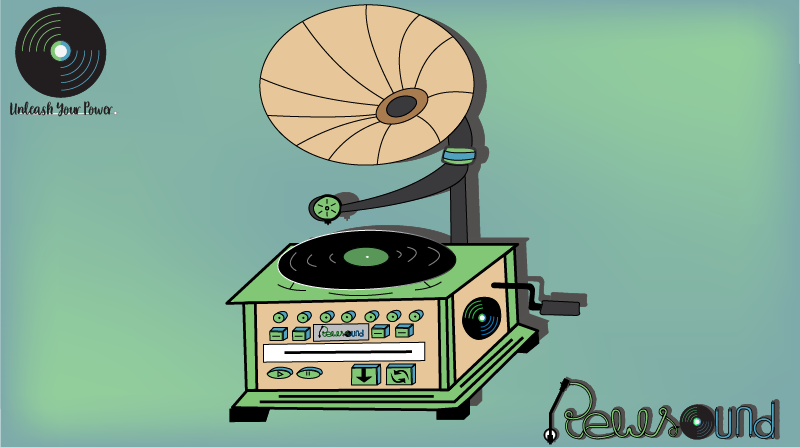

Hologravo
RewSound a le plaisir de vous présenter sa gamme de produits Hologravo, avec 3 types de produits pour ravir la plupart d'entre vous.
|  | L'Hologravo V est le modèle original du gramophone, amélioré pour répondre à nos défis techniques. |
| L'Hologravo M est notre modèle "mix", mélangeant les styles vintage et moderne en utilisant des écrans tactiles. |  |
 |
L'Hologravo F est notre modèle le plus abouti. Destiné aux férus de technologie de 2222, ils sont dotés d'un clavier holographique pour paramètrer votre Hologravo. |
Notre Hologravo, pour démarrer, nécessite une impulsion de départ qui se traduit par un simple tour de manivelle. Après cette impulsion, le disque effectuera sa rotation de lui-même grâce à une génératrice intégrée. L'inertie du disque le fera tourner indéfiniment, laissant place à une source quasi infinie d'énergie. Cette même énergie produite par l'Hologravo s'accumule alors dans une batterie intégrée à la machine, et est ensuite redistribuée dans le réseau électrique afin d'alimenter toute la maison.
Sur leur face musicale, ils peuvent contenir jusqu'à une trentaine de musiques, comme les disques de l'époque. En revanche, l'autre face est destinée à du stockage de données ; sa capacité s'élève alors à 1 Véraoctet, soit 10^48 octets.
Nos vinyles sont fabriqués sur commande de l'utilisateur, grâce à l'imprimante 3D à l'intérieur de la machine. Suivant notre souhait de protéger l'environnement et limiter la surconsommation, tous ces vinyles sont biodégradables et / ou recyclables selon ce que souhaite en faire l'utilisateur. Jetés dans la nature, ils se désintègrent en une dizaine de jours et peuvent être mangés par les vers pour produire de l'engrais. Mais si vous souhaitez réutiliser votre matériel perdu pour cause de casse ou d'usure, il existe une fonction sur notre Hologravo qui permet de recycler en quelques instants les disques défectueux. Les déchets produits serviront alors à fabriquer de nouveaux disques. Le cycle de la matière est bouclé.